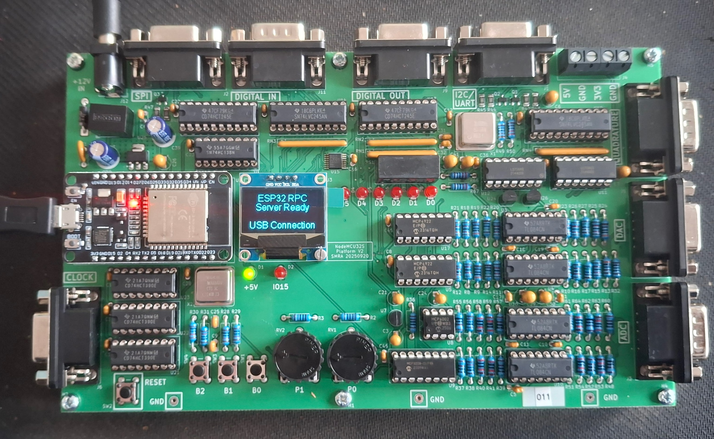

Samenvatting
De documentatie van de ESP32 NodeMCU RPC Library is een uitgebreide handleiding die gebruikers begeleidt bij het gebruik en de ontwikkeling van een RPC-library voor ESP32 NodeMCU-apparaten. De documentatie is gericht op gebruikers die willen leren hoe ze deze library kunnen gebruiken en ontwikkelen in Python, met een focus op Windows-besturingssystemen en de PyCharm IDE.

De documentatie is opgedeeld in verschillende secties, waaronder een introductie, functies, vereisten, installatie-instructies, configuratie van verbindingen, een snelle startgids, een GUI-testapplicatie, een API-sneloverzicht en een projectstructuur. Er zijn ook gedetailleerde instructies voor het uploaden van de ESP32-firmware, het installeren van Python-dependencies en het configureren van verbindingen via USB of WiFi.
De documentatie bevat ook een uitgebreide voorbereidingsectie die gebruikers helpt bij het opzetten van hun ontwikkelomgeving, het verkrijgen van de NodeMCU RPC Library en het maken van een virtuele Python-omgeving. Er zijn stapsgewijze instructies voor het downloaden van de library, het maken van een fork op GitHub en het gebruik van GIT voor versiebeheer.
Al met al biedt deze documentatie een uitgebreide gids voor gebruikers die geïnteresseerd zijn in het werken met de ESP32 NodeMCU RPC Library, met duidelijke instructies en voorbeelden om aan de slag te gaan.